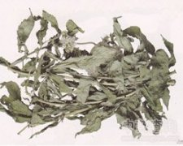

野马追

拼音
Yě Mǎ Zhuī
别名
白鼓钉、化食草、毛泽兰
来源
菊科泽兰属植物三叶尖佩兰Eupatoriumlindleyanum DC. var. trifoliatum Makino，以全草入药。秋冬采，晒干。
生境分布
生于潮湿山坡，草地或溪边。分布华东、华南、华北、东北及台湾等地。
药材特点
多年生草本，高1～2米。根茎短，生有须根。茎直立。上部分枝，淡褐色或带紫色，散生紫色斑点，嫩时密被毛，老时毛较少。叶对生，3全裂似轮生，有时不分裂或深裂，无柄，裂片线状披针形，边缘有疏锯齿，两面被毛，下面有脓点，脉3出。头状花序多数，有短梗，排列成紧密的伞房状；总苞钟状，苞片9，披针形；每一头状花序有管状花5朵，两性，带紫色，先端5裂；雄蕊5；柱头2裂。瘦果黑色，椭圆形而微扁。花期9月。
性状
干燥全草，茎呈圆柱形，有纵棱，密被灰白色毛茸；下部褐色，上部略带紫褐色；质硬，易折断，断面纤维状，白色。叶对生，无柄，3全裂似轮生；湿润展平后，中间裂片较长，呈线状披针形，边缘疏锯齿，上面绿褐色，下面黄绿色，于放大镜下可见腺点，两面被毛。枝端常残留头状花序或果实。以身干、叶多、色绿、无杂质者为佳。
性味
苦，平。
功能主治
清肺，止咳，平喘，降血压。用于支气管炎，高血压病。
用法用量
1～2两。
化学成分
全草含黄酮类（内有金丝桃甙）、生物碱类、挥发油及香豆精等。
药理作用
1：野马追中的黄酮类成分用羧甲基纤维素配成混悬液：予小鼠口服后对氨水引起的咳嗽，具有一定的镇咳作用
2：据报道：10％浓度对金黄色葡萄球菌、痢疾杆菌、甲型链球菌有抑制作用，临床上，能使白细胞增加、血压下降，并抑制腺体分泌
摘录
《全国中草药汇编》